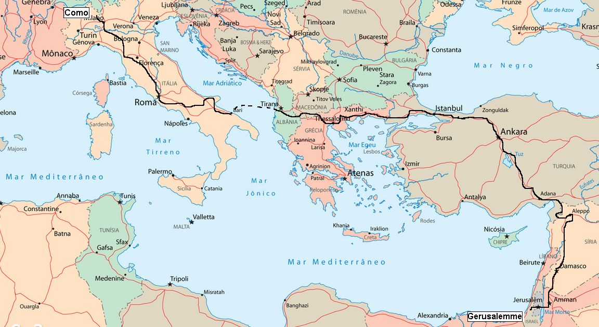

Областа Дримкол го зафаќа југозападниот дел на Р. Македонија. Дримкол е поделен на Горни и Долни. Долни или Дебарски Дримкол е пределот, во кој се сместени селата: Јабланица, Лакавица, Пискупштина, Безево, Нерези, Горно и Долно Луково, Модрич и Дренок.
Селата од Долни Дримкол се расположени околу мали потоци и извори, со исклучок на Луково које е сместено на една ширина во Клисурата на Дрим. Селото Јабланица е расположено во долниот ток на истоимената река.
Западната граница на Долни Дримкол ја сочинува планината Јабланица. Границата оди по самиот срт на планината, односно со самата гранична линија со Р Албанија, таа минува над селото Јабланица и селото Лакавица. Тргнува од висот Ветерник (1369 н. в),
границата на Дримкол воедно е и државна граница помеѓу Р. Македонија и Р Албанија, оди кон југозапад преку Цер и Орлов Камен на Радуч (2084 н.в ), а оттука по стариот синор помеѓу селата Јабланица, Лакавица и Стеблево, од Радуч на Соколец, па слегува на местото Див Костен на Лакајчка Река, а од див Костен на југ на Незирова Тумба, па на Невестин Гроб и Стрижак.
Јужната граница накосо ја започнува од Стрижак кон исток, до над селото Боровец, а потоа свртува на североисток и исток, заобиколувајќи го селото Боровец и низ потокот Бигор излегува на реката Дрим, се до устието на Јабланичка Река, се качува низ Ѓуркин Камен на Локовски Рид и, преку Црвена Карпа и Липоќ, повторно се спушта на реката Дрим кај Модрички Мост и продолжува по реката Црни Дрим.
На овој десен дел од Црн Дрим сега нема населби, туку само осојната страна на Локовски Рид кој им припаѓа на селата Нерези и Луково.
На север, кон Дренок, границата оди по текот на Дримот на местото Порта, оттаму на Горна Краста и Сениште, па на Ветерник, така што на селото Модрич, односно Долни Дримкол, му останува целиот вис Филипица.
На север и на запад од Долни Дримкол се наоѓа пределот Голо Брдо, на југ Горни Дримкол, а на исток, преку реката Дрим, Караорман или Струшка Малесија.
Оваа содржина е превземена од книгата Ристе Наумоски, (2011), Долни Дримкол Опис.
Името произлегува од името на реката Дрим и од турскиот израз кол. Што се однесува до името на реката Дрим, може да се каже дека тоа влече и претсловенски корен, најверојатно е од келтско потекло.
Всушност, тоа име може да се поврзе со зборот дрем што на шкотски јазик значи река која се мати, а токму таков е случајот со Дрим кога ќе го зафати и ќе го разбранува јужниот ветер.
Во административна смисла, турскиот израз кол не е наполно јасен. Изгледа станува збор за најмала административна, управна единица, помала од нахија, којашто немала своја самостојност.
Поконкретно кажано за време на турското владеење казите се делеле на нахии, а нахиите на помали административни единици - кол( Будиноски 1998:143).
Според некои тврдења по поимот кол се одредувала област со која управувал колеси капетан кол агаси. Тоа име е исто што и капетанија, можеби жупа или кнежевство.
Нема прецизни пишани записи според кои точно би се знаело како се викал Дримкол пред доаѓањето на Турците се претпоставува дека се викал Подгор.
Во ХI в. Дримкол се споменува заедно со Дебар и Река како Агноандика.
Оваа содржина е превземена од книгата Ристе Наумоски, (2011), Долни Дримкол Опис.
Римскиот историчар Полибие дава податоци за борбите меѓу Македонците и Илирите во Охридско и тврди дека кралот Филип II го зазел Енхалон, Струга во 334 г.
Во оваа област ги среќаваме и местата со следниве топоними како: Градишта во с. Модрич, Кале во с. Пискупштина, Ченгене Кале во с.Луково и Латински добје во с. Нерези, на кои и денес има остатоци од ѕидини кои укажуваат на тоа дека тие претставувале одредени утврдувања.
Во 148 г. градот Енхалон - Струга - подпаднал под власта на Римјаните, кои го изградиле прочуениот пат Виа Егнатија за да го поврзат Рим, преку Драч и Солун со Бизант.

Во Долно дримколската област на неколку локации има остатоци од патот Виа - Егнатија, кој минувал од Ќафасан на планината Јабланица, навлегувал во Струшката Котлина, го заобиколувал мочуриштето кај Струга избивал до влезот на клисурата кај селото Добовјани, а потоа ја минувал реката Дрим кон Охрид. Кај Добовјани еден крак свртувал на север низ Долни Дримкол за Дебар и Северна Албанија (Струга и Струшко 1970: 42).
Во тоа време градот Енхалон извезувал во другите области на Римската империја земјоделски и сточарски производи, а внесувал предмети за практична употреба. Римската власт над овие простори била до IV век. Потоа Охридската област била приклучена кон провинцијата Епир. Значи самиот пат преставувал основна артерија за нормален живот на населението од овој крај во Римското време. Според едно предание за местото викано Војскин кое се наоѓа во с. Јабланица се вели дека тука била стационирана римска воена населба која го штитела патот Виа Егнатиа од напади на разбојници низ Дримската клисура ( Лекоски 1985:16).
Оваа содржина е превземена од книгата Ристе Наумоски, (2011), Долни Дримкол Опис.
{kind=link}